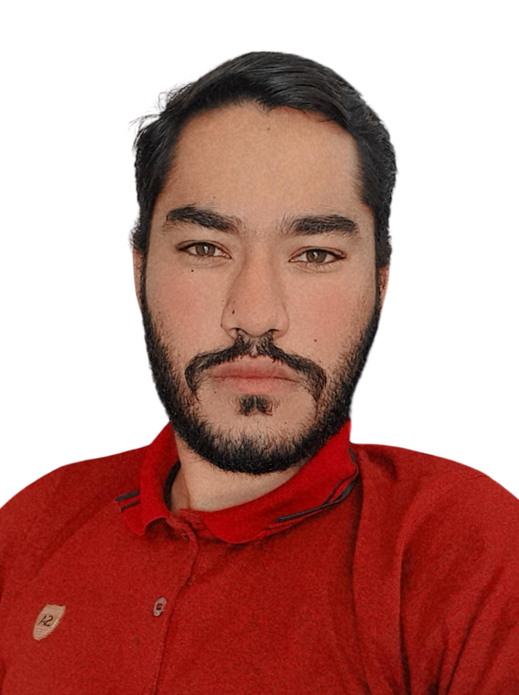
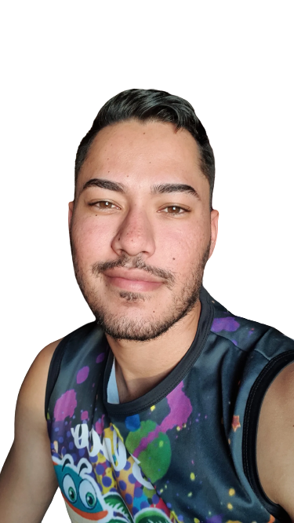

Fabrício Lustosa.
Web Developer

TECNOLOGIAS APRENDIDAS.
HTML
CSS
JAVASCRIPT
GIT
GITHUB

MUITO PRAZER, ME CHAMO FABRÍCIO LUSTOSA.
- Atualmente estou cursando a faculdade de Análise e Desenvolvimento de Sistemas.
- Meu interesse por programação surgiu no final de 2022 e desde então estudo diariamente para me tornar um desenvolvedor que tenha a capacidade de resolver qualquer tipo de problema e demanda na área de Desenvolvimento Web.
- Tenho facilidade em aprender as coisas por contra própria. Prova disso é que aprendi a fotografar, editar video, tocar violão e, atualmente, aprendendo inglês, sozinho.
- Acho que uma de minhas maiores qualidades é a comunicação. Além disso, busco me relacionar da melhor forma possível com todos que estão a minha volta.